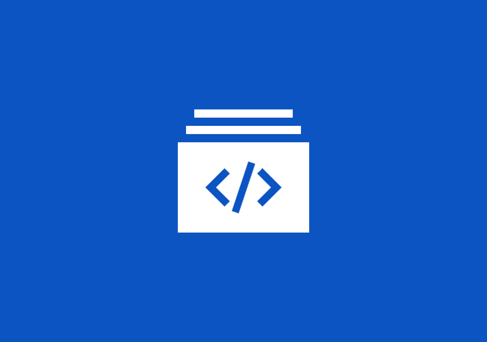
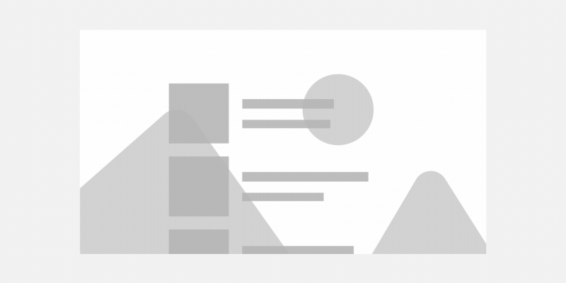

Parallax
Parallax is a visual effect where items closer to the viewer move faster than items in the background. Parallax creates a feeling of depth, perspective, and movement. In a UWP app, you can use the ParallaxView control to create a parallax effect.
WinUI APIs: ParallaxView class, VerticalShift property, HorizontalShift property
Platform APIs: ParallaxView class, VerticalShift property, HorizontalShift property
Examples
| WinUI 2 Gallery | |
|---|---|
 |
If you have the WinUI 2 Gallery app installed, click here to open the app and see the ParallaxView in action. |
Parallax and the Fluent Design System
The Fluent Design System helps you create modern, bold UI that incorporates light, depth, motion, material, and scale. Parallax is a Fluent Design System component that adds motion, depth, and scale to your app. To learn more, see the Fluent Design overview.
How it works in a user interface
In a UI, you can create a parallax effect by moving different objects at different rates when the UI scrolls or pans. To demonstrate, let's look at two layers of content, a list and a background image. The list is placed on top of the background image which already gives the illusion that the list might be closer to the viewer. Now, to achieve the parallax effect, we want the object closest to us to travel "faster" than the object that is farther away. As the user scrolls the interface, the list moves at a faster rate than the background image, which creates the illusion of depth.

Using the ParallaxView control to create a parallax effect
To create a parallax effect, you use the ParallaxView control. This control ties the scroll position of a foreground element, such as a list, to a background element, such as an image. As you scroll through the foreground element, it animates the background element to create a parallax effect.
To use the ParallaxView control, you provide a Source element, a background element, and set the VerticalShift (for vertical scrolling) and/or HorizontalShift (for horizontal scrolling) properties to a value greater than zero.
The Source property takes a reference to the foreground element. For the parallax effect to occur, the foreground should be a ScrollViewer or an element that contains a ScrollViewer, such as a ListView or a RichTextBox.
To set the background element, you add that element as a child of the ParallaxView control. The background element can be any UIElement, such as an Image or a panel that contains additional UI elements.
To create a parallax effect, the ParallaxView must be behind the foreground element. The Grid and Canvas panels let you layer items on top of each other, so they work well with the ParallaxView control.
This example creates a parallax effect for a list:
<Grid>
<ParallaxView Source="{x:Bind ForegroundElement}" VerticalShift="50">
<!-- Background element -->
<Image x:Name="BackgroundImage" Source="Assets/turntable.png"
Stretch="UniformToFill"/>
</ParallaxView>
<!-- Foreground element -->
<ListView x:Name="ForegroundElement">
<x:String>Item 1</x:String>
<x:String>Item 2</x:String>
<x:String>Item 3</x:String>
<x:String>Item 4</x:String>
<x:String>Item 5</x:String>
<x:String>Item 6</x:String>
<x:String>Item 7</x:String>
<x:String>Item 8</x:String>
<x:String>Item 9</x:String>
<x:String>Item 10</x:String>
<x:String>Item 11</x:String>
<x:String>Item 13</x:String>
<x:String>Item 14</x:String>
<x:String>Item 15</x:String>
<x:String>Item 16</x:String>
<x:String>Item 17</x:String>
<x:String>Item 18</x:String>
<x:String>Item 19</x:String>
<x:String>Item 20</x:String>
<x:String>Item 21</x:String>
</ListView>
</Grid>
The ParallaxView automatically adjusts the size of the image so it works for the parallax operation so you don't have to worry about the image scrolling out of view.
Customizing the parallax effect
The VerticalShift and HorizontalShift properties let you control degree of the parallax effect.
- The VerticalShift property specifies how far we want the background to vertically shift during the entire parallax operation. A value of 0 means the background doesn't move at all.
- The HorizontalShift property specifies how far we want the background to horizontally shift during the entire parallax operation. A value of 0 means the background doesn't move at all.
Larger values create a more dramatic effect.
For the complete list of ways to customize parallax, see the ParallaxView class.
Do's and don'ts
- Use parallax in lists with a background image
- Consider using parallax in ListViewItems when ListViewItems contain an image
- Don't use it everywhere, overuse can diminish its impact